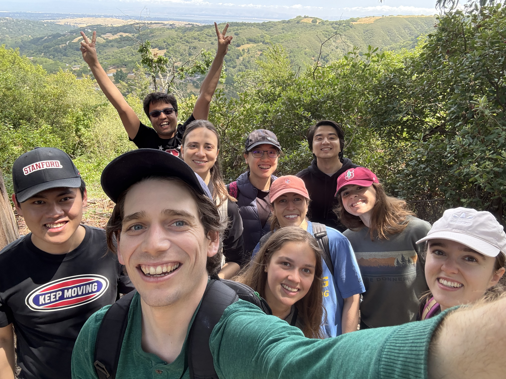

Stanford High Assurance Computer Architectures Lab
Principal Investigator

Advisees



Scalable Assurance via Verifiable Hardware-Software Contract
This direction includes projects related to hardware verification. We are seeking to develop automated and scalable verification tool and methodology to enable efficient and effective verification of system-level properties such as correctness of memory consistency model implementation and security guarantees. One example is rtl2uspec that enables verification of hardware memory consistency model for an input hardware design.
Generating Formal Specifications from Natural Language
A rigorous formalization of hardware design requirements is invaluable for verification. However, writing formal specifications is an error-prone and time-consuming manual task, and thus frequently limits the application of verification techniques in practice. We are developing new frameworks (e.g., nl2spec) to translate natural language to formal specifications through integrating LLMs and automated reasoning in order to systemically minimize the overall manual effort required to produce accurate formal specifications.
Featured Publications
-
MICRO '24"RTL2MµPATH: Multi-µPATH Synthesis with Applications to Hardware Security Verification". Yao Hsiao, Nikos Nikoleris, Artem Khyzha, Dominic P. Mulligan, Gustavo Petri, Christopher W. Fletcher, and Caroline Trippel. In Proceedings of the 57th IEEE/ACM International Symposium on Microarchitecture, November 2024.
-
FMCAD '24"Memory Consistency Model-Award Cache Coherence for Heterogeneous Hardware". Rachel Cleaveland and Caroline Trippel. In Proceedings of the 2024 Conference on Formal Methods in Computer Aided Design (FMCAD), October 2024.
-
FMCAD '24"Translating Natural Language to Temporal Logics with Large Language Models and Model Checkers". Daniel Mendoza, Christopher Hahn, and Caroline Trippel. In Proceedings of the 2024 Conference on Formal Methods in Computer Aided Design (FMCAD), October 2024.
-
SP '24"Serberus: Protecting Cryptographic Code from Spectres at Compile Time". Nicholas Mosier, Hamed Nemati, John C. Mitchell, and Caroline Trippel. In Proceedings of the 45th IEEE Symposium on Security and Privacy, May 2024.
-
EuroSys '24"Model Selection for Latency-Critical Inference Serving". Daniel Mendoza, Francisco Romero, and Caroline Trippel. In Proceedings of the 15th European Conference on Computer Systems (EuroSys), April 2024.
-
CAV '23"nl2spec: Interactively Translating Unstructured Natural Language to Temporal Logics with Large Language Models". Matthias Cosler, Christopher Hahn, Daniel Mendoza, Frederik Schmitt, and Caroline Trippel. In Proceedings of the 34th International Conference on Computer Aided Verification, July 2023.
-
DAC '23"G-QED: Generalized QED Pre-silicon Verification beyond Non-Interfering Hardware Accelerators". Saranyu Chattopadhyay, Keerthikumara Devarajegowda, Bihan Zhao, Florian Lonsing, Brandon A. D'Agostino, Ioanna Vavelidou, Vijay D. Bhatt, Sebastian Prebeck, Wolfgang Ecker, Caroline Trippel, Clark Barrett, and Subhasish Mitra. In Proceedings of the 60th Design Automation Conference, July 2023.
-
ISCA '22"Axiomatic Hardware-Software Contracts for Security". Nicholas Mosier, Hanna Lachnitt, Hamed Nemati, and Caroline Trippel. In Proceedings of the 49th International Symposium on Computer Architecture (ISCA), June 2022.
-
ASPLOS '22"RecShard: Statistical Feature-Based Memory Optimization for Industry-Scale Neural Recommendation". Geet Sethi, Bilge Acun, Niket Agarwal, Christos Kozyrakis, Caroline Trippel, and Carole-Jean Wu. In Proceedings of the 27th International Conference on Architectural Support for Programming Languages and Operating Systems (ASPLOS), February-March 2022.
-
MICRO '21"Synthesizing Formal Models of Hardware from RTL for Efficient Verification of Memory Model Implementations". Yao Hsiao, Dominic P. Mulligan, Nikos Nikoleris, Gustavo Petri, and Caroline Trippel. In Proceedings of the 54th International Symposium on Microarchitecture (MICRO), October 2021.
- FMCAD '21"Scaling Up Hardware Accelerator Verification using \aqed with Functional Decomposition". Saranyu Chattopadhyayi, Florian Lonsing, Luca Piccolboni, Deepraj Soni, Peng Wei, Xiaofan Zhang, Yuan Zhou, Luca Carloni, Deming Chen, Jason Cong, Ramesh Karri, Zhiru Zhang, Caroline Trippel, Clark Barrett, and Subhasish Mitra. In Proceedings of the 2021 Conference on Formal Methods in Computer Aided Design (FMCAD), October 2021.
- ISCA '21Jose Rodrigo Sanchez Vicarte, Pradyumna Shome, Nandeeka Nayak, Caroline Trippel, Adam Morrison, David Kohlbrenner, Christopher W. Fletcher. “Opening Pandora’s Box: A Systematic Study of New Ways Microarchitecture Can Leak Private Data”. In Proceedings of the 48th ACM/IEEE International Symposium on Computer Architecture (ISCA), June 2021.
- PLDI '21"Porcupine: A Synthesizing Compiler for Vectorized Homomorphic Encryption". Meghan Cowan, Deeksha Dangwal, Armin Alaghi, Caroline Trippel, Vincent T. Lee, and Brandon Reagen. In Proceedings of the 42nd ACM SIGPLAN International Conference on Programming Language Design and Implementation (PLDI), June 2021.
- ASPLOS '21"RecSSD: Near Data Processing for Solid State Drive Based Recommendation Inference Extended Abstract". Mark Wilkening, Udit Gupta, Samuel Hsia, Caroline Trippel, Carole-Jean Wu, David Brooks, and Gu-Yeon Wei. In Proceedings of the 26th International Conference on Architectural Support for Programming Languages and Operating Systems (ASPLOS), April 2021.
- MLSys '21"Understanding and Improving Failure Tolerant Training for Deep Learning Recommendation with Partial Recovery". Kiwan Maeng, Shivam Bharuka, Isabel Gao, Mark Jeffrey, Vikram Saraph, Bor-Yiing Su, Caroline Trippel, Jiyan Yang, Mike Rabbat, Brandon Lucia, and Carole-Jean Wu. In Proceedings of the 3rd Conference on Machine Learning and Systems (MLSys), April 2021.
In the Media
February, 2018. CheckMate's synthesis of new variants of Meltdown and Spectre:
- TechSpot: "Researchers discover two new Spectre and Meltdown variants."
- Digital Trends: "New ‘Prime’ Meltdown, Spectre exploits outlined by Nvidia, Princeton University"
- Gizmodo: "Researchers Find New Ways to Exploit Meltdown and Spectre Vulnerabilities in Modern CPUs"
- Hacker News: "MeltdownPrime, SpectrePrime: Exploiting Invalidation-Based Coherence Protocol"
- Tech Xplore: "MeltdownPrime and SpectrePrime: Researchers nail exploits"
- Engadget: "Researchers discover new ways to abuse Meltdown and Spectre flaws"
April, 2017. TriCheck and deficiences in the RISC-V ISA MCM Specification:
- Princeton Press Release
- RISC-V Response
- Phys.org: "Tool checks computer architectures, reveals flaws in emerging design"
- System Bits: "April 18 – RISC-V errors; spin-wave logic gates; deep learning is old"
- Electronics Weekly: "RISC-V bugs found by Princeton"
- Electronic Design "Memory Ordering Flaw Found in Rare Version of RISC-V Hardware"
- Design and Reuse. "RISC-V: When a bug really is a feature"
March, 2016. STARNet Center for Future Architectures Research (CFAR):
- March, 2016: STARNet Center for Future Architectures Research (CFAR) coverage of our work
Joining the Lab
We are looking for motivated graduate and undergraduate researchers. If you are interested in joining the lab, please send an email to trippel @ stanford . edu with your resume and CV.